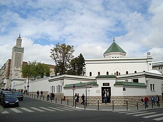

Überblick
La grande mosquée de Paris (GMP) est une mosquée française construite dans le style hispano-mauresque avec un minaret de 33 mètres.
مسجد باريس الكبير من أكبر مساجد فرنسا، شيّد من قبل الدولة الفرنسية، تكريما لها للجنود المسلمين الذين دافعوا عنها خلال الحرب العالمية الأولى، حيث اتخذ قرار بناء الجامع الكبير في باريس في اليوم التالي لمعركة فردان وخصص له 500.000 فرنك فرنسي، وساهم سلطان المغرب في إنشاء وقف إسلامي لإنهاء البناء، ودشِّن في يوم 15 يوليو 1926م من طرف الرئيس الفرنسي آنذاك دومارغ والسلطان المغربي مولاي يوسف بن الحسن.
The Grand Mosque of Paris, also known as the Great Mosque of Paris or simply the Paris Mosque, located in the 5th arrondissement of Paris, is one of the largest mosques in France. It comprises prayer rooms, an outdoor garden, a small library, a gift shop, along with a cafe and restaurant. In all, the mosque plays an important role in promoting the visibility of Islam and Muslims in France. Completed in 1926, is the oldest mosque in metropolitan France.
Paris Büyük Camii, Paris'in Quartier Latin mahallesinde bulunan camidir.
Grande Mosquée de Paris adalah sebuah masjid yang terletak di arondisemen Ve. Masjid ini didirikan setelah Perang Dunia I sebagai tanda terima kasih Prancis kepada tirailleurs Muslim dari koloni yang turut berperang melawan pasukan Jerman. Masjid ini dibangun mengikuti gaya mudéjar. Menaranya memiliki tinggi 33 meter. Masjid ini diresmikan oleh Presiden Gaston Doumergue pada tanggal 15 Juli 1926. Ahmad al-Alawi (1869-1934), seorang Sufi Aljazair, pendiri salah satu ajaran Sufi modern Darqawiyya Alawiyya, cabang dari Shadhiliyya, menjadi imam salat pertama dalam peresmian masjid di hadapan presiden Prancis pada masa itu. Masjid Raya Paris saat ini dipimpin oleh mufti Dalil Boubakeur, yang juga menjabat sebagai presiden Dewan Muslim Prancis yang dibentuk tahun 2002.
مسجدِ پیرس فرانس میں تعمیر ہونے والی پہلی مسجد ہے۔ یہ فرانس کے دار الحکومت پیرس کے قدیم حصے میں واقع ہے۔ اس مسجد کا باقاعدہ افتتاح 15 جولائی 1926ء کو ہوا تھا اگرچہ اس میں پہلی نماز 1922ء میں پڑھی گئی تھی۔ یہ ایک ہیکٹر رقبے پر واقع ہے اور اس کا مینار 33 میٹر اونچا ہے۔ اس میں مدرسہ اور کتب خانہ قائم ہیں۔ اسے فرانس اور الجزائر کی حکومتیں مسجد کی ایک کمیٹی کی مدد سے مل کر چلاتی ہیں۔
Die Große Pariser Moschee, im Quartier Latin von Paris, wurde nach dem Ersten Weltkrieg erbaut als Zeichen des Dankes Frankreichs an die Muslime, die in den kolonialen Hilfstruppen (Tirailleurs) gegen das Deutsche Reich gekämpft hatten.
La Gran Mezquita de París es la mayor de Francia. Tiene una hectárea de superficie y un minarete de 33 metros de altura. Es de estilo marroquí y se encuentra en el nº 6 de la calle Georges-Desplas en el Barrio Latino, V distrito de París, cerca del Jardin des Plantes.
La Grande moschea di Parigi, sita nel V arrondissement, è la più grande moschea di Francia e la terza in Europa.
A Grande Mosquée de Paris, localizada no 5.º arrondissement, é a maior mesquita da França e a terceira maior da Europa. Foi fundada após a Primeira Guerra Mundial em agradecimento aos soldados muçulmanos provindos das colônias francesas muçulmanas. Cerca de 100000 destes morreram em combate contra a Alemanha. A mesquita foi construída em estilo mudéjar, e seu minarete tem 33 metros de altura. O presidente Gaston Doumergue participou de sua inauguração em 1926.
De Grote Moskee van Parijs is een moskee gelegen in het 5e arrondissement van Parijs. Het is de grootste moskee van Frankrijk en op twee na grootste van Europa. De moskee is na de Eerste Wereldoorlog opgericht als Franse dank voor de hulp tijdens de oorlog van moslimtirailleurs uit de Franse koloniën. Honderdduizend van hen sneuvelden in de strijd met Duitsland. Bij de bouw werd de stijl van Mudéjar Morisco gevolgd, waarbij een minaret van 33 meter hoog werd opgericht. De Franse president Gaston Doumergue opende de moskee op 15 juli 1926 en de Algerijn Ahmad al-Alawi leidde de eerste gebeden. Gedurende de Tweede Wereldoorlog was de moskee een geheime veilige plaats voor hen die gezocht werden door de Duitsers en werden er valse geboortepapieren gemaakt voor joden.
巴黎大清真寺，位于巴黎第五区，是法国最大清真寺、欧洲第二大清真寺。它兴建于第一次世界大战之后，法国以此感激来自法国殖民地的穆斯林军人与德国作战。这座清真寺为穆德哈尔风格，其宣礼塔高33米。1926年7月15日，加斯东·杜梅格总统为其揭幕，阿尔及利亚苏非派领袖艾哈迈德·阿拉维（1869–1934）带领了开幕典礼上的第一次公共祈祷。现任教长为“穆夫提”鲍巴克尔。
グランド・モスケ・ド・パリ は、フランスにあるモスク。ヒスパノ・ムーア様式 で、付属するミナレットの高さは33mである。パリ5区、ジャルダン・デ・プラント地区、ジョルジュ・デスプラ通りに位置する。1926年7月15日、シ・カドゥール・ベンガブリット によって創設された。グランド・モスケは、イスラム教とイスラム教徒の可視性にとって象徴的な、重要な場所である。
파리 대 모스크(프랑스어: Grande Mosquée de Paris 그랑 모스케 드 파리[*])은 프랑스 파리 5구에 있는 모스크로, 프랑스에서 가장 큰 모스크 중 하나다. 기도실, 야외 정원, 소규모 도서관, 기념품 가게, 카페, 레스토랑이 있다. 1926년에 완공되었으며 프랑스 본토에서 가장 오래된 모스크다.
Великая парижская мечеть — соборная мечеть, расположенная в 5-м округе Парижа в Латинском квартале рядом с Садом растений, в 2,6 км к юго-востоку от Лувра. Раскинувшись на площади в один гектар, Парижская мечеть является одной из самых больших во Франции. Одним из её основателей был Поль Бурдари.
Nhà thờ Hồi giáo Paris là nhà thờ Hồi giáo lớn nhất nước Pháp, nằm ở Quận 5 thành phố Paris. Theo phong cách Hồi giáo-Tây Ban Nha, nhà thờ này rộng một hecta và cao 33 mét, được khánh thành ngày 15 tháng 7 năm 1926.
Marea Moschee din Paris este principala moschee din Paris, capitala Franței. Este considerată cea mai mare și cea mai importantă moschee de pe teritoriul acestei țări, având un complex religios de clădiri anexe ce se întinde pe o suprafață de cca.7.500 de metri pătrați.
Auf der Karte
Dokumente und Links
- Wikipédia — Français
- Wikipédia — العربية
- Wikipédia — English
- Wikipédia — Türkçe
- Wikipédia — Bahasa Indonesia
- Wikipédia — اردو
- Wikipédia — Deutsch
- Wikipédia — Español
- Wikipédia — Italiano
- Wikipédia — Português
- Wikipédia — Nederlands
- Wikipédia — 中文
- Wikipédia — 日本語
- Wikipédia — 한국어
- Wikipédia — Русский
- Wikipédia — Tiếng Việt
- Wikipédia — Română
- Wikidata — Q392564
Daten: Wikidata (CC0), alle 3 Monate aktualisiert. Das Jahr ist das älteste bekannte Baudatum des Gebäudes: Bei einem Bauwerk, das erst später zur Moschee wurde (wie die Hagia Sophia), ist es das des ursprünglichen Gebäudes. Fotos: Wikimedia Commons, Urheber und Lizenz auf der Seite jedes Fotos.